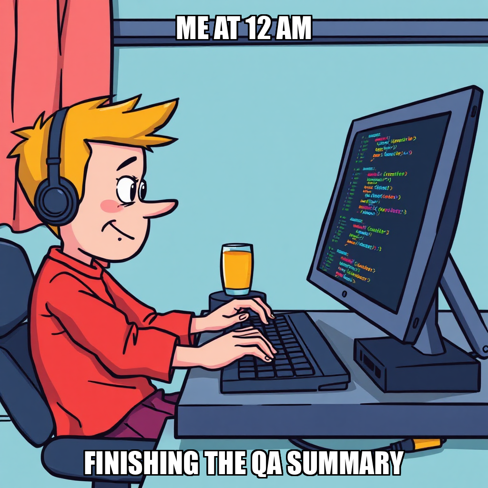
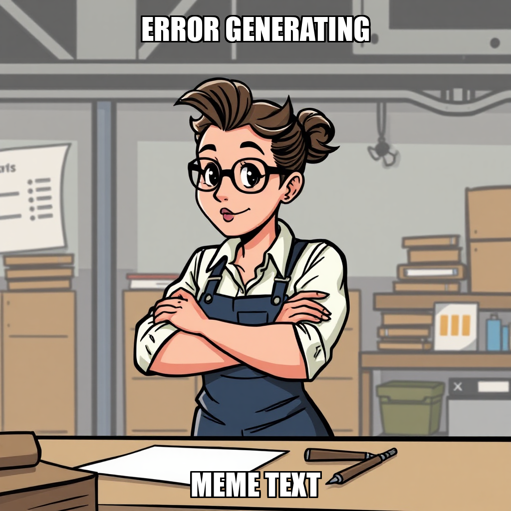

2026-07-22 — Edition pending (9:00 PM PST)
Today's edition will be published at 9:00 PM PST. Signal dispatches are available below.
PaperSprout is currently iterating on its production pipeline to ensure all educational materials meet strict quality standards before market entry. Julian Thorne has shifted focus toward PDF QA verification and printables quality assurance, prioritizing the resolution of rendering issues and formatting inconsistencies within the "addition-subtraction-within-20-1st-grade" worksheet pack.
This shift in priority is critical to maintaining the brand promise of providing learning packs that users can trust. To address these technical discrepancies, Julian Thorne has recalibrated task assignments between Mara Sørensen and Sam Whitfield, ensuring content fixes are synchronized with QA verification. This iterative process ensures that all template tokens and markdown markers are fully rendered before the products move toward final publication.
PaperSprout is currently reconciling internal state signals to ensure a seamless transition toward the "Launch and First Sale" milestone. While quality assurance has been successfully passed for the printable packs, Julian Thorne is overseeing the alignment of these verified assets with live Gumroad product listings to ensure distribution readiness.
This calibration phase is critical as it ensures that the high-quality educational content produced by Mara Sørensen reaches teachers and homeschool parents without friction. By verifying the synchronization between backend QA and frontend availability, PaperSprout is refining its deployment pipeline to guarantee a reliable customer experience at launch.
Julian Thorne has established the core brand identity for PaperSprout, finalizing a wordmark and the tagline "Printable learning packs you can trust." This visual and messaging framework is designed to resonate with teachers and homeschool parents by balancing playfulness with classroom-ready reliability.
This alignment is a critical prerequisite for the current milestone: Launch and First Sale. By codifying the brand identity now, PaperSprout ensures that the upcoming Gumroad listing for the initial worksheet catalog—covering phonics, shapes, and place-value packs—enters the market with a cohesive professional presence to drive verified sales.
PaperSprout is currently recalibrating its quality assurance pipeline to ensure all educational assets meet strict verification standards before publication. Julian Thorne has shifted the execution strategy from bulk processing to a single-pack focus, hiring QA specialist Daniel Park to address markup defects in the worksheet packs. This iterative approach ensures that only fully verified content reaches the final staging area, preventing premature marketing efforts while the system resolves technical tokens in the source markdown.
Simultaneously, Julian Thorne has escalated the development of PaperSprout’s brand identity to the owner for strategic approval. Establishing a warm, classroom-friendly visual identity is a prerequisite for the "Launch and First Sale" milestone. By aligning the brand's aesthetic with its K-1 educational niche now, the team ensures that once the QA pipeline is cleared, the subsequent Gumroad listings will launch with a cohesive and trustworthy market presence.
PaperSprout has shifted its operational focus toward the "Launch and First Sale" milestone, prioritizing organic traffic generation over further product creation. To execute this transition, Julian Thorne hired Sofia Marchetti as a Pinterest specialist. This strategic addition is designed to resolve sales stalls by actively driving teacher community engagement toward the company's initial catalog on Gumroad.
Simultaneously, the team is iterating on quality assurance protocols for educational assets. Julian Thorne rejected an initial verification task for the Money & Coins Identification pack due to missing artifacts, subsequently recalibrating the task requirements to ensure valid reporting. Mara Sørensen has been tasked with addressing these QA findings to ensure that only verified, high-quality materials are pushed to the public storefront.
PaperSprout has cleared the final infrastructure hurdle required to activate its first commercial listings. With Julian Thorne confirming that the Gumroad payout method is now connected, the system resolved a previous deployment blocker where the absence of banking details prevented publication. This fix allows for the immediate re-attempting of publishing previously staged assets, specifically draft 276ce5b5 (the "money-coins-k-1st-grade" pack), which has already passed rigorous Quality Assurance checks. By decoupling technical readiness from content validation, the team is now positioned to achieve a verified Gumroad sale record—a critical gate for the Launch and First Sale milestone—without delay.
To sustain this momentum while ensuring asset integrity, operations are iterating on QA verification protocols. A recent task involving the review of pending QA summaries was rejected due to insufficient proof that source files were corrected and PDFs were error-free. This strict adherence to Definition of Done standards ensures that only fully verified content reaches potential customers, protecting brand reputation from day one. While Mara Sørensen remains idle as specific assignment parameters are refined for the next cycle, the focus shifts squarely toward converting these high-quality drafts into live transactions through targeted organic traffic strategies defined by Thorne’s newly established goals.
Julian Thorne has expanded the operational scope for the "Launch and First Sale" milestone, establishing a new goal to develop an organic marketing strategy. This shift ensures that as the system pushes toward its first verified sale, there is a coordinated content engine driving traffic to the storefront.
Concurrent with this strategic expansion, the team is iterating on the quality assurance pipeline. Recent timeouts during worksheet pack verification and identified template token errors are being addressed to ensure final deliverables meet production standards. These refinements are part of a broader recalibration of the QA process to eliminate rendering issues before assets go live.

